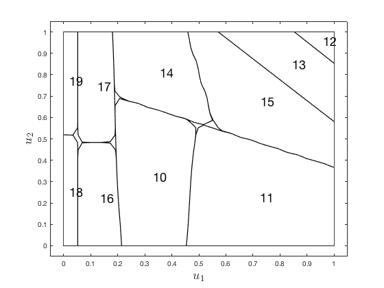

hilomotDemo3 Demo 3: Static process with 2 inputs and 2 outputs.
HiLoMoT - Nonlinear System Identification Toolbox
Benjamin Hartmann, 04-April-2012
Institute of Mechanics & Automatic Control, University of Siegen, Germany
Copyright (c) 2012 by Prof. Dr.-Ing. Oliver Nelles
LMN = hilomot;
[u1g, u2g] = meshgrid(linspace(0,1,25), linspace(0,1,25));
u1 = u1g(:);
u2 = u2g(:);
y1 = (1./(0.1+u1) + (2*u2).^2)/14;
y2 = 0.1./(0.1+(1-u1)/2+(1-u2)/2);
LMN.input = [u1 u2];
LMN.output = [y1, y2];
LMN.info.dataSetDescription = 'demonstration example';
LMN.info.inputDescription = {'input 1', 'input 2'};
LMN.info.outputDescription = {'output 1', 'output 2'};
LMN.minError = 0.05;
LMN = LMN.train;
figure
LMN.plotModel([1 2],1)
figure
LMN.plotModel([1 2],2)
figure
LMN.plotPartition
[u1G, u2G] = meshgrid(linspace(0,1,30), linspace(0,1,30));
u1G = u1G(:);
u2G = u2G(:);
y1G = (1./(0.1+u1G) + (2*u2G).^2)/14;
y2G = 0.1./(0.1+(1-u1G)/2+(1-u2G)/2);
yGModel = calculateModelOutput(LMN, [u1G u2G], [y1G y2G]);
JG = calcGlobalLossFunction(LMN, [y1G y2G], yGModel);
yGModelQuick = calculateModelOutputQuick(LMN, [u1G(23,:) u2G(23,:)]);
xInputDelay is empty, defaults are used: xInputDelay(1:p) = {0}
zInputDelay is empty, defaults are used: zInputDelay(1:p) = {0}
xOutputDelay is empty, defaults are used: xOutputDelay(1:p) = {[]}
zOutputDelay is empty, defaults are used: zOutputDelay(1:p) = {[]}
Initial net has 1 local model(s): J = 0.535886
1. Iteration. Number of local models = 1. Checking for split of model 1 ...
Testing split in dimension 1: J = 0.374804
Testing split in dimension 2: J = 0.461942
Axes-oblique splitting: J = 0.343815
-> SPLITTING RESULT: J = 0.343815
2. Iteration. Number of local models = 2. Checking for split of model 3 ...
Testing split in dimension 1: J = 0.281137
Testing split in dimension 2: J = 0.260521
Testing parent split: J = 0.280163
Axes-oblique splitting: J = 0.179346
-> SPLITTING RESULT: J = 0.179346
3. Iteration. Number of local models = 3. Checking for split of model 4 ...
Testing split in dimension 1: J = 0.162229
Testing split in dimension 2: J = 0.152157
Testing parent split: J = 0.155390
Axes-oblique splitting: J = 0.150019
-> SPLITTING RESULT: J = 0.150019
4. Iteration. Number of local models = 4. Checking for split of model 2 ...
Testing split in dimension 1: J = 0.124851
Testing split in dimension 2: J = 0.143885
Testing parent split: J = 0.124115
Axes-oblique splitting: J = 0.121038
-> SPLITTING RESULT: J = 0.121038
5. Iteration. Number of local models = 5. Checking for split of model 6 ...
Testing split in dimension 1: J = 0.111624
Testing split in dimension 2: J = 0.117520
Testing parent split: J = 0.118415
Axes-oblique splitting: J = 0.111221
-> SPLITTING RESULT: J = 0.111221
6. Iteration. Number of local models = 6. Checking for split of model 5 ...
Testing split in dimension 1: J = 0.100895
Testing split in dimension 2: J = 0.101491
Testing parent split: J = 0.083291
Axes-oblique splitting: J = 0.073524
-> SPLITTING RESULT: J = 0.073524
7. Iteration. Number of local models = 7. Checking for split of model 7 ...
Testing split in dimension 1: J = 0.062645
Testing split in dimension 2: J = 0.067675
Testing parent split: J = 0.069197
Axes-oblique splitting: J = 0.061806
-> SPLITTING RESULT: J = 0.061806
8. Iteration. Number of local models = 8. Checking for split of model 9 ...
Testing split in dimension 1: J = 0.060779
Testing split in dimension 2: J = 0.053226
Testing parent split: J = 0.060780
Axes-oblique splitting: J = 0.053225
-> SPLITTING RESULT: J = 0.053225
9. Iteration. Number of local models = 9. Checking for split of model 8 ...
Testing split in dimension 1: J = 0.053213
Testing split in dimension 2: J = 0.046675
Testing parent split: J = 0.053213
Axes-oblique splitting: J = 0.046667
-> SPLITTING RESULT: J = 0.046667
Error limit reached.
Final net has 10 local models and 78 parameters: J = 0.046667
Net 10 with 10 LMs and 78 parameters is suggested as the model with the best complexity trade-off.Plot model for dimensions 1 and 2.
Plot model for dimensions 1 and 2.
Plot partitioning for dimensions 1 and 2.
ans =
1×10 Contour array:
Columns 1 through 7
Contour Contour Contour Contour Contour Contour Contour
Columns 8 through 10
Contour Contour Contour


